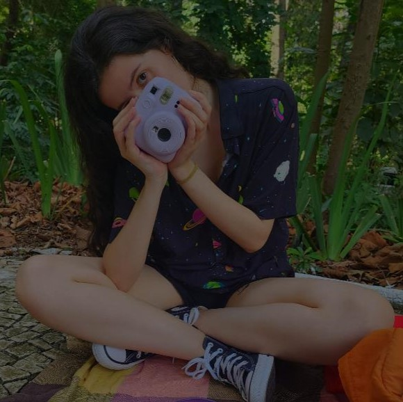

Um pouco sobre mim
Comecei na tecnologia aos 14 anos, mal sabendo usar "Ctrl + C, Ctrl + V". Ao longo de cinco anos de muito aprendizado, dos quais quatro tive o prazer de estar trabalhando na Tecnologia Única, desenvolvi não só minhas habilidades técnicas, como também minha capacidade de analisar problemas e pensar em soluções, comunicação e como trabalhar em grandes equipes.
Com foco na área de e-commerces, participei da criação e manutenção dos sites de clientes como Havanna e Lity, além de ter tido a oportunidade de desenvolver o site institucional da empresa Bravium. Apesar de já trabalhar na área há algum tempo, resolvi ingressar na graduação em Web Design para aprimorar minhas habilidades, enriquecer meu portfólio e me tornar uma profissional mais preparada para o mercado.
Ver mais
Projetos

Prototipagem Prática

Meu Primeiro Site

Cards de Preço

Landing Page